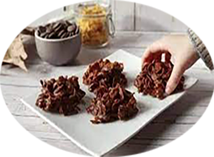

Roses des sables

Pour 7
Préparation : 15 mn
Cuisson : 5 mn
Ingrédients
- 250g de chocolat au lait à pâtisser
- 100g de céréales corn flakes
- 20g beurre demi-sel
- 2 c à soupe de sucre glace
Recette
- Coupez le beurre et le chocolat en petits morceaux. Placez-les dans un bol puis faites-les fondre doucement au micro-ondes.
- Incorporez le sucre glace et mélangez la préparation à l'aide d'une spatule, elle doit être lisse et brillante.
- Enrobez les corn flakes de chocolat fondu, veillez à ne pas briser les pétales en remuant délicatement.
- Remplissez des petites caissettes en papier, ou disposez des petits tas sur une plaque tapissée de papier sulfurisé pour former les roses des sables.
- Réservez au réfrigérateur pendant au moins 2 h afin que le chocolat durcisse. Servez cette confiserie en dessert ou à l'heure du goûter.
|